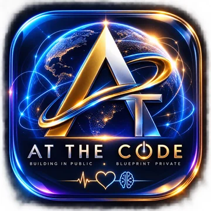
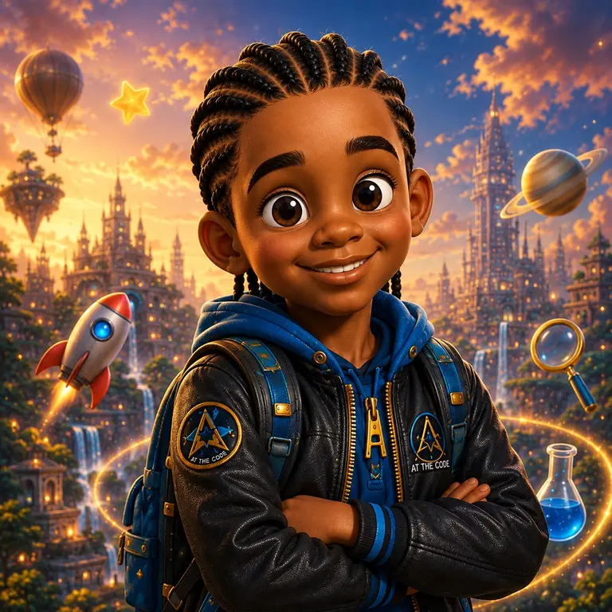
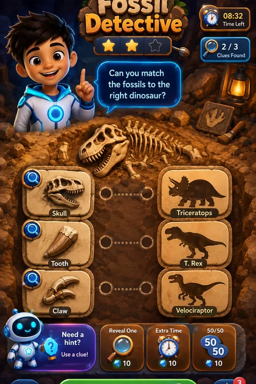
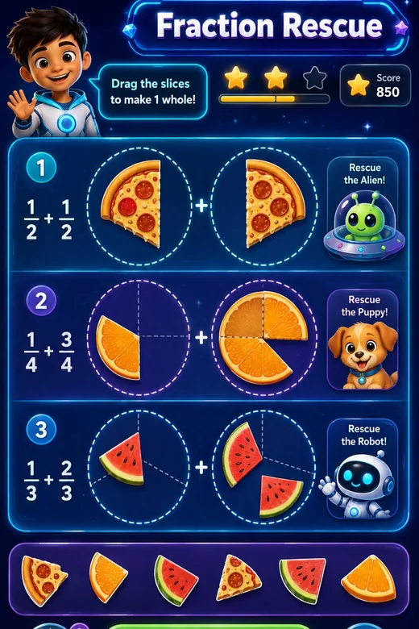

The Signal in the Sky
A short cinematic mystery introduces the clue.

AT THE CODEOrish's World
ExplorerORISH'S WORLD @ THE CODE
Join Orish on amazing adventures, solve real mysteries, build skills and make discoveries that help in real life.
CHOOSE YOUR WORLD
Tune signals, explore the station and collect evidence.

Brush, uncover, rotate and investigate clues from the past.

Repair the route using fraction pieces and visual reasoning.
FIRST PLAYABLE FLAGSHIP
Train with Orish, tune the unknown signal, collect evidence and decide what the station should do next.
Tap the signal nodes in order. Orish will show you how movement, scanning and evidence collection work.
A WORLD THAT GROWS WITH THEM
PARENT & ME
Parent-led sound, rhythm, visual tracking, movement, early words and tiny real-world missions—never independent baby AI.
CHILDREN'S LEARNING CINEMA
A short cinematic mystery introduces the clue.
Explore, investigate and collect evidence with Orish.
The story responds to discoveries made in the mission.
Speak or type, learn through the words, then build a safe cartoon scene.